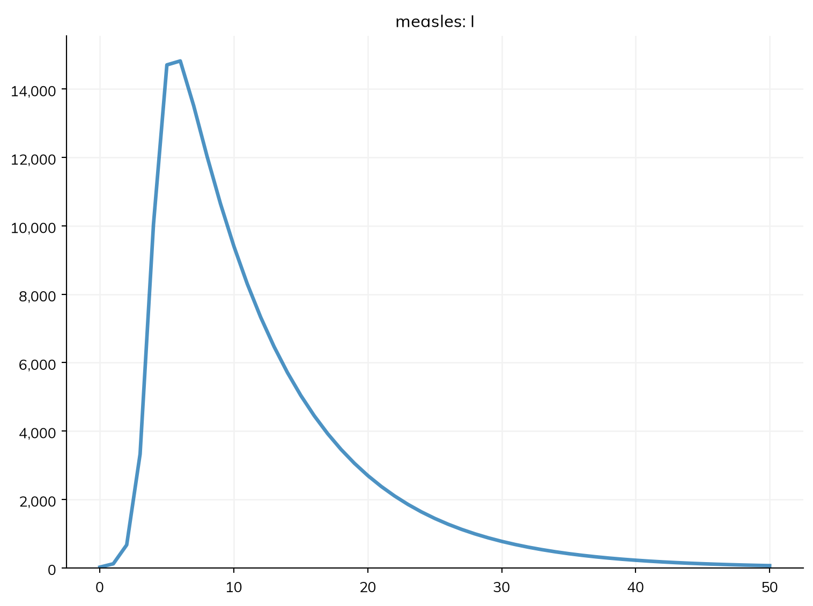
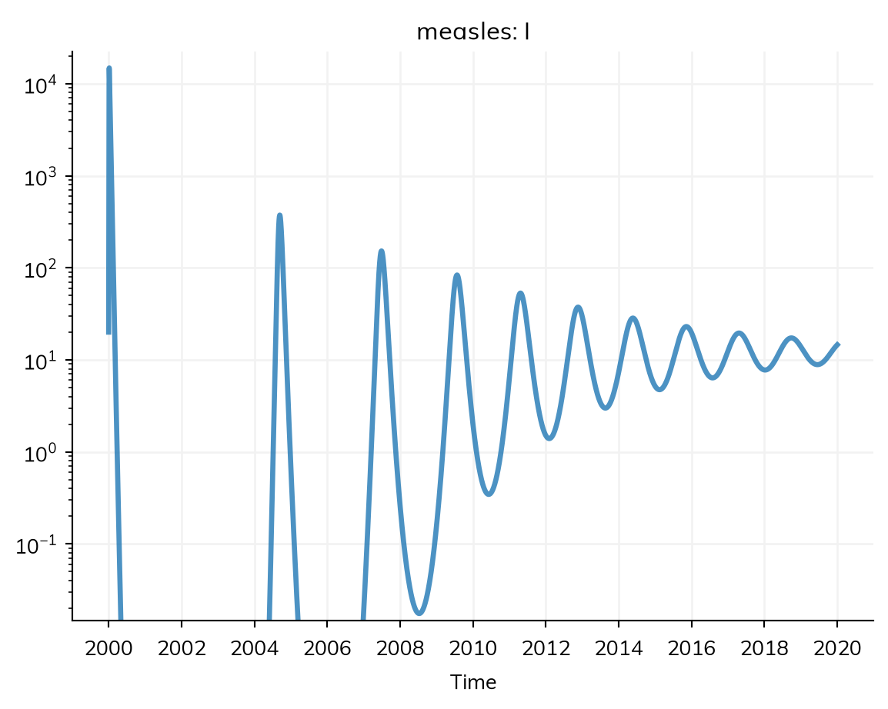
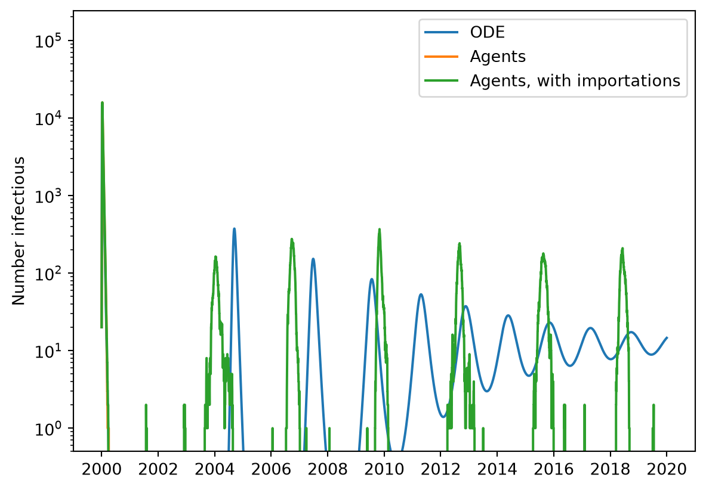
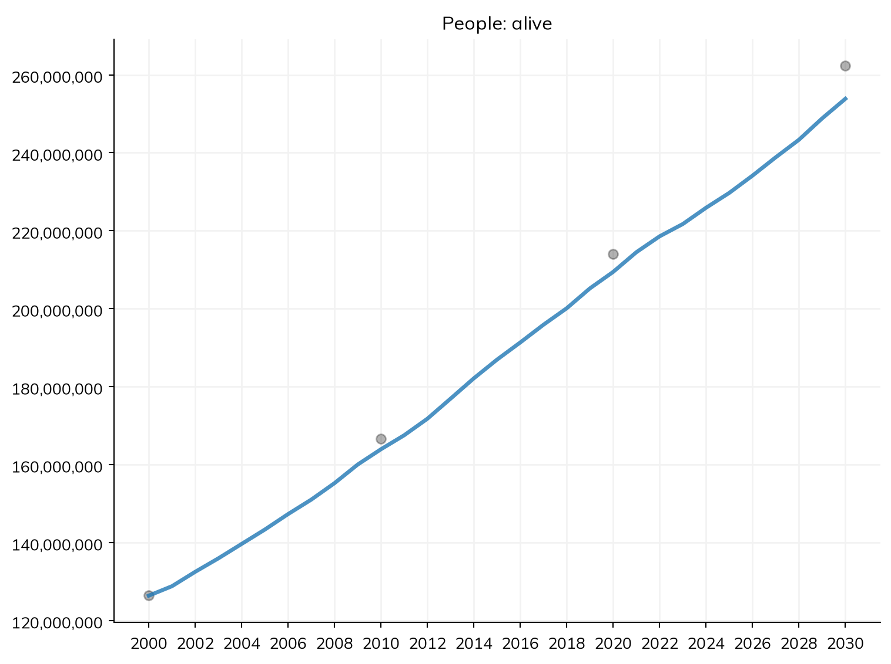
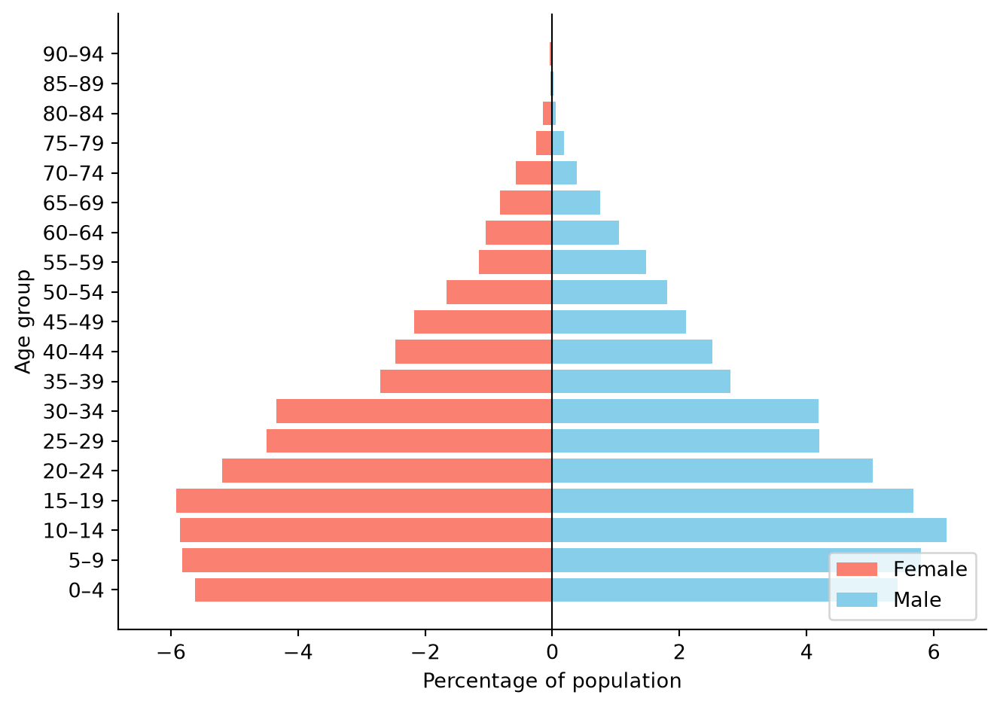
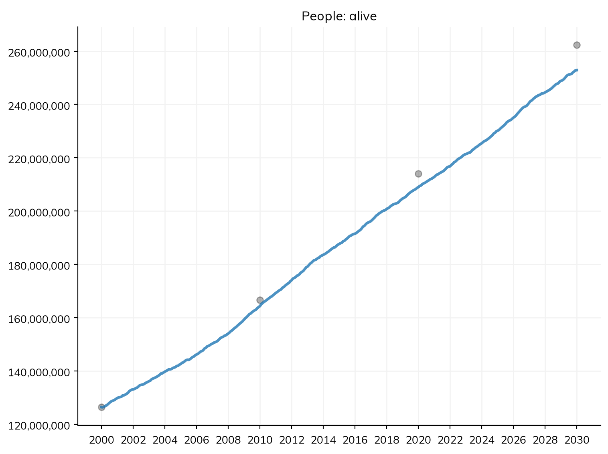
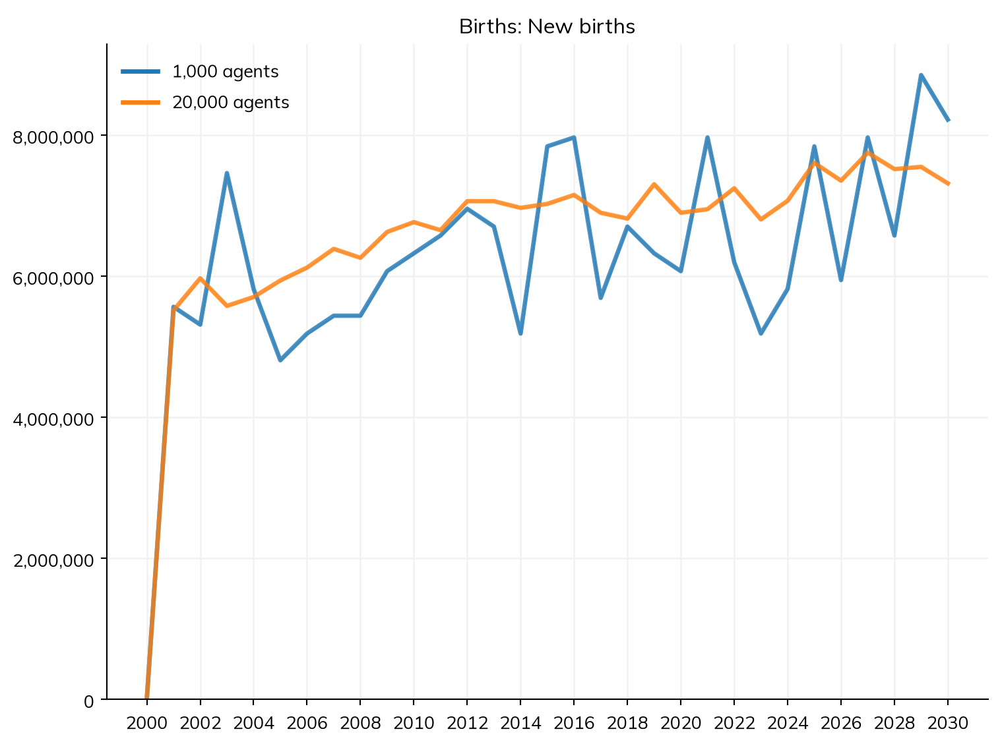

Over an outbreak of a few weeks or months, the population hardly changes, so the core tutorials left births and deaths out. Over years, it does: births bring in new people who have never been infected, deaths remove people who are immune, and the population grows and ages. These change the course of an infection, and for an infection like measles, which leaves lifelong immunity, births are what let it come back at all.
This tutorial covers births and deaths at constant rates, and what they do to measles, first as an ODE and then as agents, where measles can die out; the population of a real country, with birth and death rates from UN data; pregnancy; and how a few thousand agents can stand for a population of millions.
Starting point
The measles model from the core tutorials, in a town of 20,000 people:
import numpy as npimport matplotlib.pyplot as pltimport starsim as ssS, I, R = ss.states('S I R')infection = S >> I @1.9*I # β = 1.9 per dayrecovery = I >> R @ ss.days(8) # Infectious for 8 days on averagemeasles = ss.Disease(infection, recovery, init_prev=0.001)sim = ss.Sim(measles, total_pop=20_000, stop=ss.days(50))sim.run()sim.plot('measles.I')
Sim: measles, 20,000 people, as an ODE, days 0 to 50
measles: R0 = 15.2, with 20 infectious at the start
Done in 0.0029 s; measles: 19,980 infections; at most 14,822 infectious, on day 6

R0 = 1.9 × 8 ≈ 15, so the outbreak infects nearly everyone, and since nobody new is born, that is the end of it.
Births and deaths
There are a few basic ways to add vital dynamics to your model. The simplest is ss.birth() and ss.death(), which give births and deaths at a constant rate per person: a crude birth rate of 30 per 1,000 people per year is ss.birth(rate=ss.peryear(0.03)). People are born into each disease’s first state (S) and die from every state at the same rate, so with equal rates the population stays the same size. They are given to the sim in demographics=. You can even simply set demographics=True to use default rates. By default, agents age if and only if the population has births or deaths; you can override this by setting use_aging, e.g. ss.Sim(use_aging=False).
Births and deaths are rates per year, while β and the infectious period are per day. When a model’s rates have different units, Starsim needs every rate to say its own, so β is written ss.perday(1.9); the sim then steps by one day (dt=ss.days(1)). Here is the measles model with births and deaths, as an ODE, over 20 years:
def make_measles(importation=False):""" Measles, optionally with infections brought in from outside the town """ S, I, R = ss.states('S I R') transitions =dict( infection = S >> I @ ss.perday(1.9)*I, # β = 1.9 per day recovery = I >> R @ ss.days(8), )if importation: transitions['importation'] = S >> I @ ss.peryear(0.001) # Each susceptible person is infected outside the town at 0.001 per yearreturn ss.Disease(**transitions, init_prev=0.001, name='measles')demographics = [ ss.birth(rate=ss.peryear(0.03)), # 30 births per 1,000 people per year ss.death(rate=ss.peryear(0.03)), # 30 deaths per 1,000 people per year]pars =dict(demographics=demographics, start='2000-01-01', stop='2020-01-01', dt=ss.days(1))ode = ss.Sim(make_measles(), total_pop=20_000, **pars)ode.run()res = ode.results.measlesres.I.plot(log=True);# On a log scale, since the first epidemic is so much larger than the rest
Sim: measles, 20,000 people, as an ODE, 2000-01-01 to 2020-01-01
measles: R0 = 15.2, with 20 infectious at the start
Note: the number infected in "measles" falls to 0.91 (at 2000-03-27) and then rises to 374; a stochastic run would usually die out there. solver="gillespie" with ss.parallel(n_runs=...) shows how often, in the runs of msim.results.measles.I after that point
Done in 0.0059 s; measles: 29,856 infections; at most 14,822 infectious, on 2000-01-07

After the first epidemic, there is a “honeymoon” of a few years with very little measles, while births slowly rebuild the number of susceptible people. Once there are enough of them for each case to cause more than one more, measles returns, in a series of smaller epidemics that settle toward a steady endemic level. These match the classic theory of an SIR model with births:
At the endemic level, each case causes one more, so the share of people who are susceptible is 1/R0, about 7%.
The average age at infection is about L/(R0 − 1), where L is the life expectancy (1/0.03 = 33 years here): about 2.4 years, so measles becomes a disease of young children.
The time between epidemics is about 2π√(A × D), where A is the average age at infection and D is the infectious period (8 days, or 0.022 years): about 1.4 years.
print('Share susceptible at the end:', round(res.S[-1]/20_000, 3))
Share susceptible at the end: 0.067
Births and deaths are transitions of the disease, like infection and recovery, so they have results of their own (res.births and res.deaths), and they work under every solver.
Measles as agents: dying out, and coming back
The sim also printed a note: between the epidemics, the number of infectious people in the ODE falls below one. An ODE can recover from a fraction of a person, but a real town can’t: once the last case recovers, measles is gone until someone brings it back. Agents show this. Here is the same model as 20,000 agents, and again with a few infections brought in from outside the town (about one or two a year, since each susceptible person is infected outside at 0.001 per year):
sims = {'Agents': ss.Sim(make_measles(), n_agents=20_000, **pars),'Agents, with importations': ss.Sim(make_measles(importation=True), n_agents=20_000, **pars),}for sim in sims.values(): sim.run()plt.figure()plt.semilogy(res.timevec, res.I, label='ODE')for label, sim in sims.items(): plt.semilogy(sim.results.measles.timevec, sim.results.measles.I, label=label)plt.ylim(bottom=0.5)plt.ylabel('Number infectious')plt.legend();
Sim: measles, as 20,000 agents, 2000-01-01 to 2020-01-01
Running as agents: n_agents was given
Note: consider a shorter step (e.g. dt=ss.days(0.25)): each step is 1 day, and infection transmits at up to 1.9 per day (with everyone infectious), 85% in a step (and I is fast too). Taking whole steps, agents may differ from the ODE by an amount of that order; sim.check_dt() shows how much it matters
Done in 11.2 s; measles: 20,018 infections; at most 15,820 infectious, on 2000-01-10
Sim: measles, as 20,000 agents, 2000-01-01 to 2020-01-01
Running as agents: n_agents was given
Note: consider a shorter step (e.g. dt=ss.days(0.25)): each step is 1 day, and infection transmits at up to 1.9 per day (with everyone infectious), 85% in a step (and I is fast too). Taking whole steps, agents may differ from the ODE by an amount of that order; sim.check_dt() shows how much it matters
Done in 8.0 s; measles: 29,263 infections; at most 15,838 infectious, on 2000-01-10

As agents, measles dies out after the first epidemic, and with no one to bring it back, it is gone for good, however many susceptible children are born. With importations, it comes back, but not as the ODE does: each imported case finds either too few susceptible people, and fizzles out, or enough, and starts an epidemic. So the epidemics come every few years, as large as the first of the ODE’s later ones, and they don’t settle down to an endemic level, since between them the town has no measles at all. This is why measles persists only in cities of several hundred thousand people or more (its critical community size), and why in smaller places it comes and goes with each new introduction. The share of introductions that take off is the subject of A1.
A country’s population
Constant rates are enough for a town over a few years. For more realistic demographics, birth and death rates change from year to year, and death rates differ by age and sex. Starsim includes the UN World Population Prospects for every country: ss.people('Nigeria') gives agents with the ages, sex ratio, and size of Nigeria’s population in the year the sim starts; ss.Births(birth_rate='Nigeria') gives births at Nigeria’s crude birth rate in each year; and ss.Deaths(death_rate='Nigeria') gives deaths at its death rates by year, age, and sex.
To check the model, compare its population with the UN’s, for the same years. A result is compared with data of the same name, so a column called alive is plotted with the result alive:
years = [2000, 2010, 2020, 2030]population = [ss.people('Nigeria', year=year).named.total for year in years] # The UN's population in each yeardata =dict(date=years, alive=population)people = ss.people('Nigeria', n_agents=5000)demographics = [ss.Births(birth_rate='Nigeria'), ss.Deaths(death_rate='Nigeria')]sim = ss.Sim(people=people, demographics=demographics, start=2000, stop=2030, data=data)sim.run()sim.plot('alive')
Sim: births, deaths, as 5,000 agents, each 25,300 people, years 2000 to 2030
Note: unit='year' (from start and stop years)
Done in 0.032 s

The population grows from 126 million to about 260 million, as the UN projects. The ages change too, and sim.people.plot_ages() shows the age pyramid at the end of the run:
sim.people.plot_ages()

If you want to use realistic demographics for a setting that isn’t in the UN data, or with rates of your own, ss.Births() and ss.Deaths() also take your own data: one rate, rates by year (a table with a column for the year and one for the rate), or for deaths, rates by year, age, and sex. There are examples of these files in the test_data folder (e.g. nigeria_deaths.csv), and ss.People(n_agents, age_data=...) takes the ages of the population from a file. Crude birth and death rates are usually given per 1,000 people, and these modules read a rate above 1 as per 1,000 and a rate below 1 as per person; give rate_units=1000 or rate_units=1 to say which (they warn when a rate could be either). See Demographics in the user guide.
Pregnancy
ss.Births() adds babies to the population as a whole. ss.Pregnancy() instead gives women of reproductive age pregnancies, at age-specific fertility rates, which last about nine months and end in a birth (or a miscarriage, a stillbirth, or a maternal death, at rates that can be set). This is what a model needs when something depends on pregnancy itself: infection passed from mother to child (see A2), testing in antenatal care, or the effects of a disease on pregnancy. Pregnancy is itself declared as states (NP, not pregnant, and P, pregnant) and transitions (conception, delivery, and so on), so other modules can use them, e.g. where=pregnancy.P, and each transition is a result. As per standard definitions, fertility_rate is defined per woman, whereas a birth rate is defined per person.
As with births and deaths, ss.Pregnancy(fertility_rate='Nigeria') reads Nigeria’s age-specific fertility rates from the UN: births per 1,000 women in each 5-year age group, by year. Pregnancy takes months, so the sim steps by a month:
Sim: pregnancy, deaths, as 5,000 agents, each 25,300 people, years 2000 to 2030
Running as agents: people were given
Note: unit='month' (from dt)
Note: pregnancy: women pregnant at the start, conceived over the 9 steps before it (burnin=True)
Done in 1.6 s

The population grows much as it did with crude birth rates, but now each birth comes from a pregnancy of a particular woman, so it can be linked to her: her age, her infections, and the care she receives. The pregnancy model supplies the births, so don’t also add ss.Births() (or ss.birth()) unless it stands for a separate source of people: the same births would be counted twice.
Rates of your own work too: fertility_rate takes a table with a column for the year, one for the age, and one for the rate, e.g. pd.read_csv('test_data/nigeria_asfr.csv') (columns Time, AgeGrp, and ASFR), or one rate, e.g. ss.freqperyear(100).
Agents standing for many people
Even though we’ve been simulating populations of a few thousand agents, the results reflect a much larger population. You can think of this as a kind of statistical sampling approximation. Nigeria has well over 100 million people, and it would be much too computationally intensive to simulate one agent for each of them. Instead, each agent stands for many people: the sim takes the size of the population from ss.people('Nigeria') (or from total_pop=, e.g. ss.Sim(total_pop=200e6, n_agents=50e3) for 200 million people as 50,000 agents, each standing for 4,000), and divides it by the number of agents, so above each agent stands for about 25,000 people. Results that count people, such as alive and births, are multiplied by this, so they are in people, not agents.
Agents are a sample of the population, so results made from few of them are noisy. Here are births each year, with 1,000 agents and with 20,000:
MultiSim: 2 runs of 2 scenarios (1,000 agents, 20,000 agents)
Done in 0.41 s

With 1,000 agents, about 40 are born each year, and the number varies by chance by about the square root of that, around 6, or 15%; with 20,000 agents, the variation is about 4%. As a rule of thumb, use enough agents that the events you care about are counted in the hundreds: for births in a whole country, a few thousand agents is plenty, but for the cases of a rare disease, or the deaths in one age group, it may take many more. And for anything that depends on chance in small numbers, such as whether measles dies out in a town, the agents must be people, one each, not a sample of them. Branching and rescaling shows how to add agents as a rare infection grows.
Exercises
In Niger, the crude birth rate is 45 and the crude death rate is 9. Assuming these rates stay constant, and starting with its population in 2020 (ss.people('Niger', n_agents=5000)), how many people will there be in 2040? (You do not need to include any diseases in your model.) Compare this with its UN birth and death rates.
In the measles model with births, how does the time between epidemics in the ODE change if the birth rate (and the death rate) is 20 per 1,000 per year instead of 30? Does it agree with the theory above?
In the town of 20,000 with importations, how often do epidemics come if the town has 50,000 people instead (and so more births each year)? Does measles ever persist between them?
Contraception lowers the rate of conception: ss.modify(pregnancy.conception, multiply=0.7, start=2010) cuts it by 30% from 2010. Add it to the Nigeria model with pregnancy as an intervention. How many fewer people are there in 2030?